UF Blueberry Breeding Lab · weather platform
How the blueberry weather platform works
This guide explains every part of the app in plain words: the production system, the production window, the top risks, the planting window, the regional evidence, and how to read the Season & exposures window with its colours, dotted boxes and chill numbers.
The running example is Papanduva in Santa Catarina, Brazil, the location in your screenshot. Every Papanduva number in this guide comes from the app's saved result.
Prepared 12 October 2026 from the current code (crop model stage_thermal_v3) and the saved Papanduva, Arcadia and Chao results. Screenshots come from the running app.
Part 1
The platform in one minute
Choose a place
Search for a town, click the map, type coordinates, or open one of 71 saved locations.
Read past weather
The lab server reads the stored weather for that place for the winters of 2011 to 2025. Nothing is downloaded at that moment.
Build a crop calendar
For every past year, the model counts winter cold and then spring warmth to estimate budbreak, flowering, fruit growth and harvest.
Count bad weather
It checks each crop stage for frost, heat, heavy rain, disease-friendly weather and poor bee weather, and counts in how many years each one happened.
The planting window is counted back from the modelled budbreak, using a rule from the supervisor's R workflow. On top of that, the app adds two pieces of outside knowledge. Published planting seasons come from university extension guides and appear as a comparison line. Regional evidence comes from International Blueberry Organization (IBO) industry reports. Neither of them changes the weather numbers.
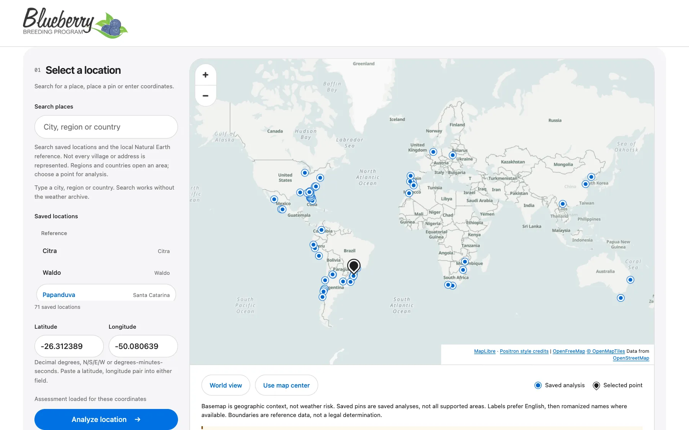
What the app is not
Part 2
Where the weather comes from
Source. NASA POWER, a free NASA weather archive. The lab downloaded it once for the whole world and stores it on the lab server.
What is in it. Daily minimum, maximum and average temperature, rain, humidity, wind and sunshine. There is also hourly temperature and dew point, which the app needs for chill hours, disease and bees.
The grid. NASA splits the world into boxes 0.5 degrees tall and 0.625 degrees wide. At Papanduva one box is about 55 km from north to south and 62 km from east to west. Every pin inside one box gets the same weather.
Years. The winters of 2011 to 2025, so 15 winters. The server also reads 2010, so the first winter is complete.
Clock. The app counts days in UTC, the world clock. In Brazil a UTC day runs from 9 pm to 9 pm local time.
Part 3
Words to know first
Winter, the counting window
Each year gets a fixed six-month window for counting cold. In the southern hemisphere it runs from 1 April to 30 September. In the northern hemisphere it runs from 1 November to 30 April. "Winter 2018" at Papanduva means 1 April to 30 September 2018. In Florida, "winter 2018" means November 2017 to April 2018.
Chill hour
One hour when the air is colder than 7.2 °C, which is 45 °F. Hours below freezing count too. A blueberry plant needs a dose of winter cold before it wakes up properly in spring. Chill hours measure that dose.
Chill requirement
The dose of cold the model plant needs before it can start growing: 50 chill hours. The user set this value on 12 October 2026. Before that the model used 100 hours, the low end of the 100 to 400 hours Lyrene (2008) gives for Emerald. Neither number is a measured minimum for one cultivar. Northern highbush cultivars need many hundreds of hours, so the app's dates do not describe them.
Chill portion
A second, stricter way to count cold, called the Dynamic Model. Think of a savings account with a waiting period. Cold first builds up a half-finished amount, and a warm spell can wipe the half-finished part out before it is saved. Only saved amounts become portions. The app shows portions next to chill hours for comparison. It does not use them for any decision.
Heat unit, also called a degree-day
How much warmth one day gives the plant. Take the day's average temperature and subtract 7 °C. A day averaging 17 °C gives 10 heat units. A day averaging 7 °C or less gives 0. After budbreak, a day above 30 °C counts as 30 °C, so one day can never give more than 23 units.
Crop stages
Budbreak is when buds open. Flowering is when flowers are open. Fruit development is when berries grow and ripen. Harvest is when berries are picked. The app calculates all four from weather. Nobody observed them in a field.
Median
Put the years in order from earliest date to latest date. The median is the year in the middle. Half the years were earlier and half were later.
p10 and p90
p10 is near the early end of the list: only 1 year in 10 was earlier. p90 is near the late end: only 1 year in 10 was later. The dotted boxes in the Season window use these two points.
Part 4
What "Mean 199 chill hours · 28.6 chill portions" means
The label inside the Winter chill bar of your screenshot reads Mean 199 chill hours · 28.6 chill portions. The first number is 199, not 99, and the second is 28.6, not 98.6. The same two numbers appear on the Overview, in the Production system card.
199 chill hours
Across the 15 winters from 2011 to 2025, an average Papanduva winter had 199 hours colder than 7.2 °C between 1 April and 30 September. That is about 8 days' worth of hours, spread over many cold nights. The coldest winter, 2011, had 368 hours. The warmest, 2015, had only 78.
Here is one real night
Each bar is one hour in the night of 11 to 12 July 2018 at Papanduva. Blue bars were colder than 7.2 °C, so each one counts as one chill hour. This night gave 14 chill hours, from 8 pm to 9 am.
The app adds up chill hours from 1 April onward. In 2018 the running total reached 50 at 10:00 UTC on 9 June, which is 7 am local time. So 9 June is the chill date of winter 2018. The July night above came a month later, when the cold dose was already complete. By 30 September that winter had collected 188 chill hours.
All 15 winters
Every winter passed the 50-hour requirement. The mildest were 2015 with 78 hours and 2023 with 84, so all 15 winters have a crop calendar. Until 12 October 2026 the requirement was 100 hours, and those two winters had no calendar. The colours are explained in the next part.
28.6 chill portions
The same 15 winters, counted with the stricter Dynamic Model, give 28.6 portions on average, from 19.1 in the mildest winter to 46.3 in the coldest. Portions and hours are different units with no fixed conversion, so 28.6 does not mean "less cold" than 199. Many scientists prefer portions because warm spells cancel part of the cold. The app shows them so breeders can compare. Its decisions use chill hours only.
The Climate history tab shows a third cold number for Papanduva: "Reference chill 168 hours". It uses a different rule: only hours from 0 to 7.2 °C, counted from May to August. All three numbers are correct. They measure cold with different rulers.
Part 5 · Overview card 01
Production system: what kind of winter does this place have?
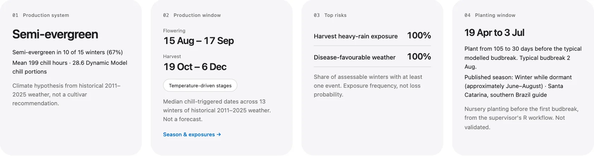
Step 1: label every winter
| Label | Rule for one winter |
|---|---|
| Deciduous | 300 or more chill hours. A cold winter, as in Georgia or Chile. |
| Evergreen | Fewer than 100 chill hours and a truly mild winter. In the coldest of July, August and September, nights must average above 7.2 °C and whole days above 12.8 °C. The winter may have at most 1 hour at or below 0 °C, and no month whose nights average at or below 0 °C. In the north the months are January to March. |
| Semi-evergreen | Everything in between. |
Step 2: take the two-thirds majority
A label wins if at least two-thirds of the winters have it. With 15 winters that means 10 or more. If no label gets there, the card says "No two-thirds majority" and shows the counts.
Papanduva has 3 deciduous winters, 10 semi-evergreen winters and 2 evergreen winters. Ten of 15 is exactly two-thirds, so the card says Semi-evergreen in 10 of 15 winters (67%). The line below it repeats the cold averages: 199 chill hours and 28.6 chill portions.
Why the label matters
It decides which calendar method the app uses. An evergreen majority means the plants have no real winter rest, so a calendar triggered by winter cold makes no sense. Arcadia, Florida, has 13 evergreen winters of 15, and the app switches to the managed-cycle scan there (Parts 9 and 10).
The label describes the climate, not a cultivar. The app calls it a "hypothesis" because no grower data confirm it.
Part 6
How one year's crop calendar is built
Here is the real chain for Papanduva in winter 2018:
The heat "savings jar" before budbreak
After the chill date, each day drops its heat units into a jar. On 26 June 2018 the day averaged 16.6 °C, so it added 16.6 minus 7, which is 9.6 units. The jar stood at 143.7 on 28 June and first passed 150 on 29 June, with 154.0. That day is budbreak.
The rules, all in one table
| Stage | Heat needed | Counted from | Where the number comes from |
|---|---|---|---|
| Cold dose | 50 chill hours | 1 April (south) or 1 November (north) | Set by the user on 12 October 2026, the same value as the legacy profiles. Paul's later R workflow used 100; the app keeps that as a sensitivity comparison |
| Budbreak | 150 heat units | The chill date | Paul's original R workflow |
| Flowering starts | 85 | Budbreak | Translated from the old fixed-day calendar at Waldo, Florida |
| Flowering ends | 375 | Budbreak | Flowering start plus 290, the bloom length measured for Emerald and Jewel at Citra, Florida |
| Harvest starts | 633 | Flowering start | Waldo translation; one Chilean farm season measured 593 to 665 |
| Harvest ends | 1,242 | Flowering start | Waldo translation of the old 40-day harvest; the least certain number |
Why heat and not days? A warm spring fills the jar faster, so flowering and harvest come earlier. A cool spring is slower. This is why the dates move from year to year.
When the chain breaks. If the 50 chill hours never arrive, there is no calendar for that year. Every Papanduva winter reached 50, but at Arcadia, Florida, 3 of 15 winters did not. If a stage cannot collect its heat within 300 days, the calendar also stops. Missing years are left out. They are never counted as good years.
All of these numbers describe a low-chill southern highbush grown in the open field. Rabbiteye and northern highbush need longer from flowering to harvest. The numbers are "provisional": they still need checking against dated farm records.
Part 7
From 15 yearly calendars to one typical calendar
The app builds the chain for every winter. At Papanduva all 15 winters gave a full calendar. Below are the 15 budbreak dates, one dot per year.
- The median budbreak is 23 July: seven years were earlier and seven were later.
- The p10 is 1 July. Only about 1 year in 10 broke bud earlier.
- The p90 is 4 August. Only about 1 year in 10 broke bud later.
The app does the same for every stage start and end. The median dates make the solid bars. The p10 of a stage's start and the p90 of its end make the dotted box around it.
This is history, not a forecast. Next year can fall outside the box: about 1 year in 10 starts before the left edge, and about 1 in 10 ends after the right edge.
Part 8 · Season & exposures tab
How to read the Season & exposures window
This is a redrawing of your screenshot with numbers added. The real screenshot follows below.
- 1Planting row. The one-time window for putting nursery plants in the ground, drawn before budbreak: 9 April to 23 June. It ends 30 days before the typical budbreak and lasts 75 days. Its dotted box runs from 18 March to 5 July, from the early winters to the late ones. The row only appears where the chill-triggered calendar applies (Part 13).
- 2Winter chill bar. The window in which the app counts cold: 1 April to 30 September at Papanduva. The text inside gives the averages for this place: 199 chill hours and 28.6 chill portions (Part 4).
- 3Black pin on the chill bar. The typical day the 50-hour cold dose was complete: 27 June, the median of 15 years. The legend calls it "Chill fulfilled".
- 4Thin outlined bar in the bud row. "Forcing after chill": the weeks after the cold dose while the plant collects its first 150 heat units, here 27 June to 22 July. The buds are still closed, so the app measures no risks in this stretch. That is why the legend says "not measured".
- 5Black pin on the bud row. Typical budbreak: 23 July. The bud development stage runs from budbreak to the day before flowering, 23 July to 4 August.
- 6Solid coloured bar. The typical dates of a stage: the median start to the median end. Harvest here runs from 11 October to 28 November. The app checks each stage's weather inside each year's own window.
- 7Dotted box. How early and how late the stage got across the years: from the p10 start to the p90 end. The harvest box runs from 29 September to 5 December. A wide box means the stage moved a lot between years. It is not an error margin.
- 8Pink row. The selected stage. You picked Flowering with the stage buttons above the chart, so its row is highlighted and its numbers appear under the chart.
- 9Production window row. The whole crop season in one bar, from budbreak to the end of harvest: 23 July to 28 November. Its dotted box runs from 1 July to 5 December.
- 10Month ruler. The counting year starts on 1 April in the southern hemisphere and on 1 November in the north. When planting starts before that date, the app opens the ruler earlier. Papanduva's planting box starts on 18 March, so the real chart below and this redrawing both run from March to December. Waldo in Florida runs from September to June.
The colours
Each colour only names a stage, like colours on a subway map. A colour never means good, bad or dangerous. The app says so in the corner of the chart: "Colours identify stages, not severity".
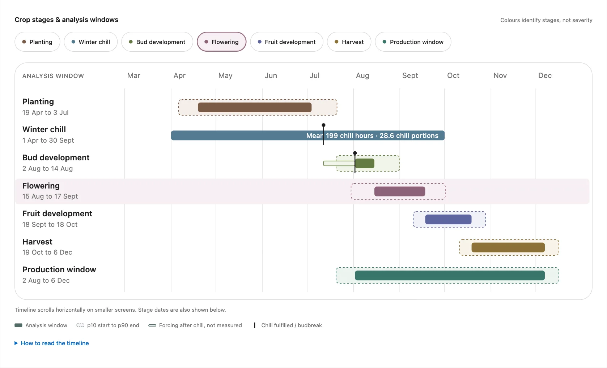
The grey strip above the chart
stage_thermal_v3 | The name and version of the crop model in use. |
| Temperature-driven stages | Stage dates come from heat units, not from a fixed number of days. |
| 50 h requirement | The cold dose: 50 chill hours. |
| UTC | Days are counted on the world clock, as explained in Part 2. |
| Semi-evergreen hypothesis | The production-system label from Part 5. |
| open field + ground | The numbers assume plants outdoors in the soil. Choosing tunnel or pots changes the notes, not the numbers. |
| unvalidated | Nobody has compared these dates with dated records from real farms yet. |
The "Winter record" selector
"Historical summary · 2011 to 2025" shows the typical calendar. Pick a single winter, for example 2018, and every bar jumps to that year's own dates. Each measure then shows that year's value next to the historical average.
Below the chart: the measures for the selected stage
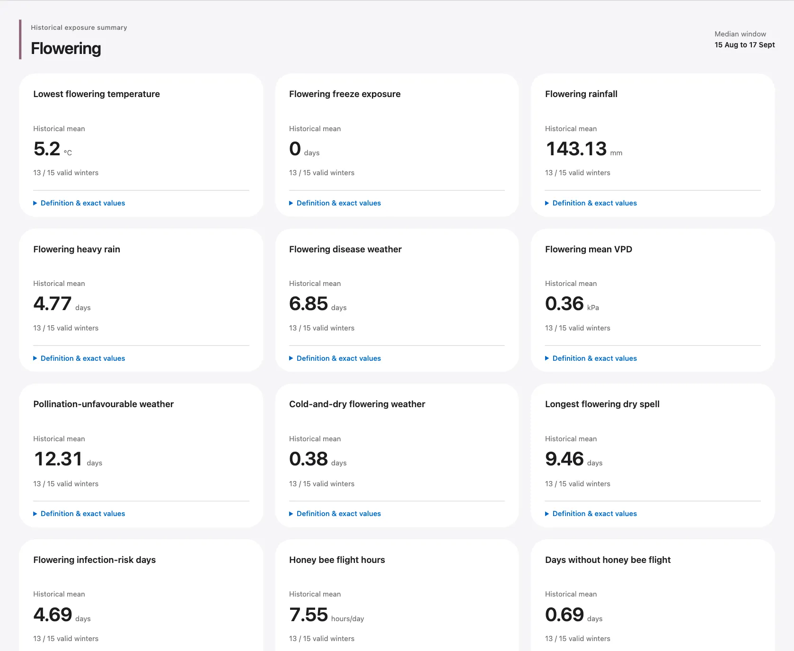
Each card names one measure, its historical average and how many years it is based on, for example "15 / 15 valid winters". At Papanduva the coldest flowering day averaged 2.65 °C. One flowering day in 15 years reached the freeze line, so flowering freeze shows 0.07 days. Open "Definition & exact values" for the exact rule and the year-by-year numbers.
Part 9
Winter calendar or managed-cycle scan: which one is used?
The winter calendar from Parts 6 to 8 only makes sense where winter cold actually starts the season. The app uses it only if all three tests pass:
| Test | Papanduva, Brazil | Arcadia, Florida |
|---|---|---|
| Outside the tropics | Pass, 26.3°S | Pass, 27.2°N |
| Not evergreen | Pass, Semi-evergreen | Fail, Evergreen in 13 of 15 winters |
| 12 or more complete years | Pass, 15 of 15 | Pass, 12 of 15 |
| Main answer | Winter calendar | Managed-cycle scan |
Arcadia passes the third test but fails the second, so the scan is still its main answer. Where the scan is the main answer, the app explains why on the Overview. At Arcadia it says the evergreen-majority system needs a management-defined crop calendar. At PF Berry, where no label has a two-thirds majority, it says "Only 11/15 winters produce a chill-triggered calendar". Where the winter calendar is the main answer, the scan still appears lower on the Season tab as a comparison, titled "If managed as an evergreen cycle".
Part 10 · for warm places
The managed-cycle scan
In south Florida, Peru or Mexico, growers do not wait for winter. They prune, strip leaves or spray to make the plants break bud when they choose. So the app asks a different question: "If a grower started the crop on this date, how would it go?"
How a start date is judged
Try 24 start dates
The 1st and the 15th of every month. Each one is treated as budbreak.
Run every year
From each start date, the app follows the same heat rules through all 15 years and records how each run ended.
Throw out the dangerous dates
A start date is out if bud freeze, flowering freeze, fruit frost, or "cycles do not complete" happens in half or more of its runs. It also needs at least 12 complete runs to be judged.
Keep the best of the rest
The rest are compared on 8 measures, lower is better. A date is kept unless another date is at least as good on all 8 and better on one. Dates that are almost as good are kept too.
The four ways a run can end
| Outcome | Meaning |
|---|---|
| Complete | The run reached the end of harvest in a normal time. |
| Stalled slow | Flowering took more than 66 days, or harvest started more than 150 days after flowering started. That is longer than any published blueberry season, so the run is treated as failed. |
| Stalled at the horizon | A stage did not collect its heat within 300 days. It was too cold for too long. |
| Weather incomplete | The weather record has a gap or ends first. These runs are not counted at all. |
The 8 measures
Four count bad runs: bud freeze, flowering freeze, fruit frost, and cycles not completed. Four count bad days: fruit days at or above 32 °C, harvest days with 10 mm of rain or more, flowering-to-harvest days with disease-friendly weather, and flowering days with no honey bee flight.
Reading the result: Arcadia, Florida
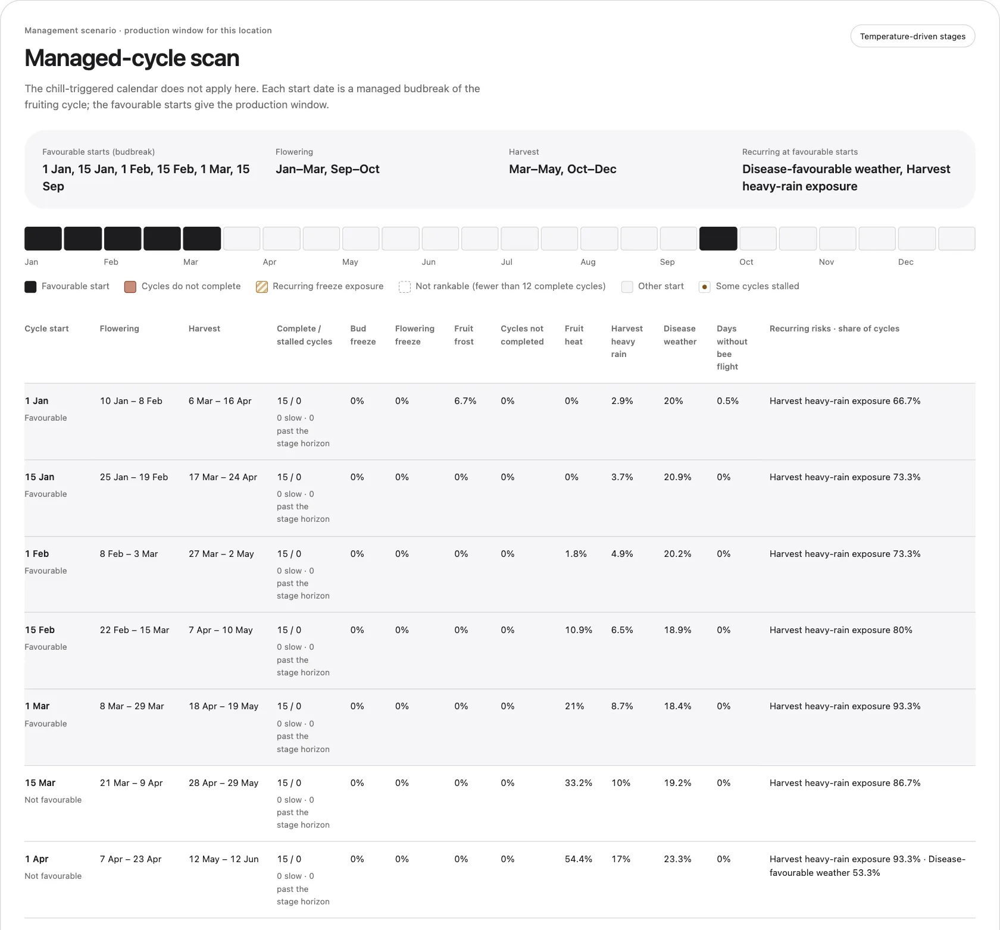
The strip of 24 boxes has one box per start date, January on the left. Their fill shows the verdict:
- Black: favourable start. Kept by the comparison in step 4.
- Light grey: other start. Safe enough, but another start date was at least as good on every measure and better on at least one.
- Striped: recurring freeze exposure. A freeze hit half or more of its complete runs.
- Brick red: cycles do not complete. Half or more of its runs stalled. This colour wins if both apply.
- Dashed white: not rankable. Fewer than 12 complete runs, so the app cannot judge it.
- Small brown dot: some runs stalled, though not enough to block the start date.
At Arcadia the favourable starts are 1 January, 15 January, 1 February, 15 February, 1 March and 15 September. Their flowering months combine into January to March and September to October, and their harvest months into March to May and October to December. That is the production window the Overview shows for Arcadia. It does not mean one plant fruits for six months. Different start dates give different months.
Why is 15 March not favourable? Its fruit would grow into the April heat. A third of its fruit days reach 32 °C, compared with none for a 1 January start, and its harvests get more heavy rain.
Two kinds of percentages in the table. The "Harvest heavy rain" column is the share of harvest days with heavy rain, 2.9% for a 1 January start. The last column, "Recurring risks · share of cycles", is the share of runs with at least one such day, 66.7% for the same start. Both are correct. They answer different questions.
The scan assumes a grower can start the crop on any date. It does not check whether the plants have formed flower buds, or what the market wants.
Part 11 · Overview card 02
The production window card
Winter-calendar places, like Papanduva
The card shows the median dates of the winter calendar: Flowering 5 Aug to 8 Sep and Harvest 11 Oct to 28 Nov. The line under it says how many years they come from: "Median chill-triggered dates across 15 winters of historical 2011 to 2025 weather. Not a forecast."
Scan places, like Arcadia
The card shows months, not dates: flowering January to March and September to October, harvest March to May and October to December. They are labelled "Management scenario", with the favourable start dates and the reason the winter calendar does not apply.
The card can also say No favourable start. Then it explains why. At a cold mountain pin near Yakima, Washington, and at Naantali, Finland, the crop runs stalled at all 24 start dates: "a crop stage did not reach its heat requirement within the 300-day stage horizon". That is a limit of the low-chill southern highbush settings. It does not prove blueberries cannot grow there.
Part 12 · Overview card 03
Top risks: how the app finds the weather problems that keep coming back
Step 1: check each year
For every year with a calendar, the app looks inside that year's own stage windows. Each check asks one yes-or-no question: did this happen at least once?
| Risk | Stage checked | It counts as "yes" if |
|---|---|---|
| Bud-stage freeze | Budbreak to the day before flowering | A night reached −6.7 °C in the first half of the stage, or −3.9 °C in the second half (NC State critical temperatures) |
| Flowering freeze | Flowering | A night reached −2.2 °C |
| Fruit frost | Fruit development | A night reached 0 °C |
| Fruit severe heat | Fruit development | A day reached 35 °C |
| Harvest heavy rain | Harvest | A day had 10 mm of rain or more |
| Disease-favourable weather | Flowering start to harvest end | A day reached high infection risk for anthracnose, or for Botrytis during flowering. The disease models come from University of Florida advisory systems and count hours with humidity of 90% or more as wet hours. |
| Pollination gap | Flowering | 4 or more days in a row without one hour at 12.8 °C or warmer between 9 am and 5 pm, the temperature honey bees need to fly |
| Chill shortfall | The winter | Fewer than 50 chill hours |
Step 2: count the "yes" years
Here is harvest heavy rain at Papanduva. Each box is one winter and shows how many harvest days had 10 mm of rain or more.
All 15 years had at least one heavy-rain harvest day. 15 of 15 is 100%. A year without a calendar would be left out, never counted as a dry year. At Papanduva every year has one.
100% does not mean the crop was lost every year. 2025 counts as "yes" with one wet day, the same as 2015 with fifteen. The cards rank how often something happened, not how bad it was. Across the 15 harvests Papanduva averaged 7.7 heavy-rain days and 239 mm of rain per harvest.
Step 3: apply two gates
- At least 12 years must have complete weather for that check.
- The event must have happened in at least half of those years, 50% or more.
Risks that pass both gates are ranked by percentage. Equal percentages share a rank. At Papanduva two risks pass. Harvest heavy rain, at 100%, is rank 1. Disease-favourable weather happened in 14 of 15 years, 93%, and is rank 2. Everything else stays out of the headline list. Chill shortfall happened in 0 of 15 winters. Flowering freeze happened in 1 of 15, and bud freeze and fruit frost in 0 of 15.
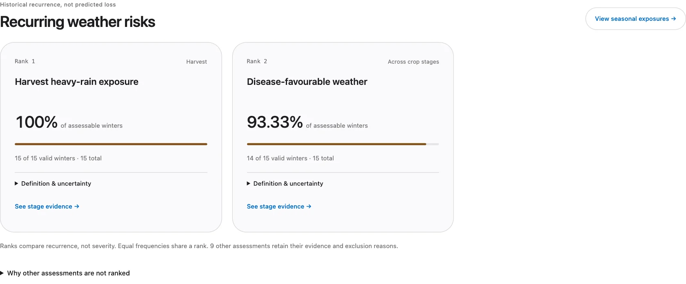
The small print on each card
- 15 of 15 valid winters · 15 total. All 15 years could be checked.
- 95% Wilson interval. With only 15 years the long-run share is uncertain. For 15 of 15 the interval runs from 80% to 100%. It measures the small number of years, not whether the model is right.
- See stage evidence. Jumps to the stage in the Season tab.
Why some checks never appear in the top list
- Below the 50% gate, like Papanduva's freezes.
- Fewer than 12 checkable years.
- Exposure only. Some measures have no agreed danger line, so they are shown but never ranked: hours above 21 °C in midwinter and the longest dry spells. Averages such as daily honey bee flight hours are shown the same way, under "Additional weather exposures" on the Overview.
- Not applicable. Where the winter calendar does not apply, its stage risks are only hypothetical. Chill shortfall still counts there, unless the place is tropical or evergreen, because missing cold is often the very reason the calendar failed.
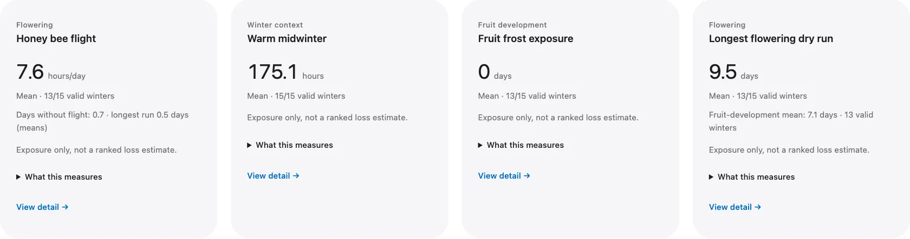
At scan places the Top risks card lists the risks that recur at the favourable start dates, with a range such as "27 to 100%" across those dates. If the winter calendar fails and some winters were short of cold, a line under the card says so. At PF Berry it reads "Chill shortfall: 4 of 15 winters (27%) below the 50-hour requirement".
Part 13 · Overview card 04
Planting window
This card answers a different question from the rest of the app. It is about putting young nursery plants in the ground once, before their first budbreak. It is not about the yearly flowering and harvest of grown plants, and it is not a first-harvest forecast.
How the app calculates the window
The rule comes from Paul's R workflow, southern_brazil_blueberry_climate_analogs.R, lines 91-92 and 1219-1220. Planting ends 30 days before the modelled budbreak and lasts 75 days. So the window runs from 105 to 30 days before budbreak.
At Papanduva the typical budbreak is 23 July, the median of 15 winters. Counting back gives a window from 9 April to 23 June. In early winters planting can start on 18 March, and in late winters it can end on 5 July. Those two limits use the 10th and 90th percentiles of budbreak, the same p10 and p90 as the dotted boxes.
The app counts one window back from the median budbreak. It does not take the median of each planting date on its own. The R code did that, and separate medians of month and day can give a window that runs backwards or splits into pieces, for example around an April year wrap. One budbreak date gives one clean window.
The published season beside it
Saved locations registered in three regions also show a published season from a regional guide, as a smaller second line headed "Published season". It is there for comparison only:
| Region | Published season shown | Source |
|---|---|---|
| Florida | Mid-December to mid-February | UF/IFAS home-garden guide (CIR1192, now MG359). The card also cites the newer commercial guide HS1525, which advises planting in the spring and fall root-growth periods. |
| Georgia | Winter, about December to February | UGA Extension Circular 946. It says "winter" without dates, so the months are a display choice. |
| Santa Catarina, Brazil | Winter while dormant, about June to August | Embrapa authors in Revista Cultivar. They say "in winter, while dormant", so the months are a display choice. |
Papanduva is registered in Santa Catarina, so under its calculated window it shows "Published season: Winter while dormant (approximately June–August)".
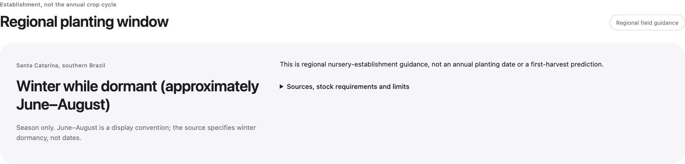
How far to trust it
- The R workflow labels the 30- and 75-day offsets "preliminary" and cites no source. Nobody has checked them against planting records.
- In the literature benchmark the rule's months usually start earlier than the published planting months. Over the 17 southern-highbush sites where it could be scored, it covers 22% of the published planting months, and 21% of its own months are published ones. In Florida and Georgia, for example, guides say December to February, while the rule gives 23 September to 7 December at Waldo and 8 September to 22 November at Alma.
- The window comes from modelled budbreak, not observed dates. The app does not check frost, heat or rain inside it, and it makes no adjustment for tunnels or pots.
- Growers still need to confirm soil workability, nursery stock, cultivar, plant condition and freeze protection.
When there is no calculated window
- At warm or evergreen sites such as Arcadia the chill requirement does not apply, so the card says "Set by management". The grower sets the crop cycle there.
- Where the chill requirement applies but too few winters reach a chill-triggered calendar, the card says "No calculated window". PF Berry is an example: only 11 of 15 winters gave a calendar.
- Both kinds of place still show their published season if they are registered in Florida, Georgia or Santa Catarina. Arcadia and PF Berry show "Mid-December to mid-February".
- A pin you drop on the map gets a calculated window from its own budbreak, but never a published season, even inside Florida. The app never guesses a region from a town name or a weather box.
Part 14 · Regional evidence tab
Regional evidence: what industry reports say about the region
How the library was built
Read the reports
The complete International Blueberry Organization reports for 2023, 2024, 2025 and 2026 are stored on the lab server and were read in full. The 2024 report was added on 12 October 2026. It covers mostly the 2023 season and brought 65 new records, such as Huelva's smaller 2023 crop after a warm winter and a South African harvest that came 3 to 4 weeks late after a long, cold 2023 winter.
Write records
Each useful statement became one record: a short paraphrase, the period, the crop context, the evidence type, the limits, and the exact pages.
Check every record
Every record was checked against its cited pages. A statement repeated in several editions stays one record with several citations, so it never looks like several events.
Tie it to a map area
Each record belongs to a country, or to a region drawn as a shape on the app's map. The app shows a record only if the pin falls inside that country or region shape.
The library has 156 records: 67 reported events, 72 reported practices and 17 reported constraints, with 301 page citations, covering 52 areas in 23 countries. Version ibo-regional-2026-10-12b, last checked on 12 October 2026.
What a card shows
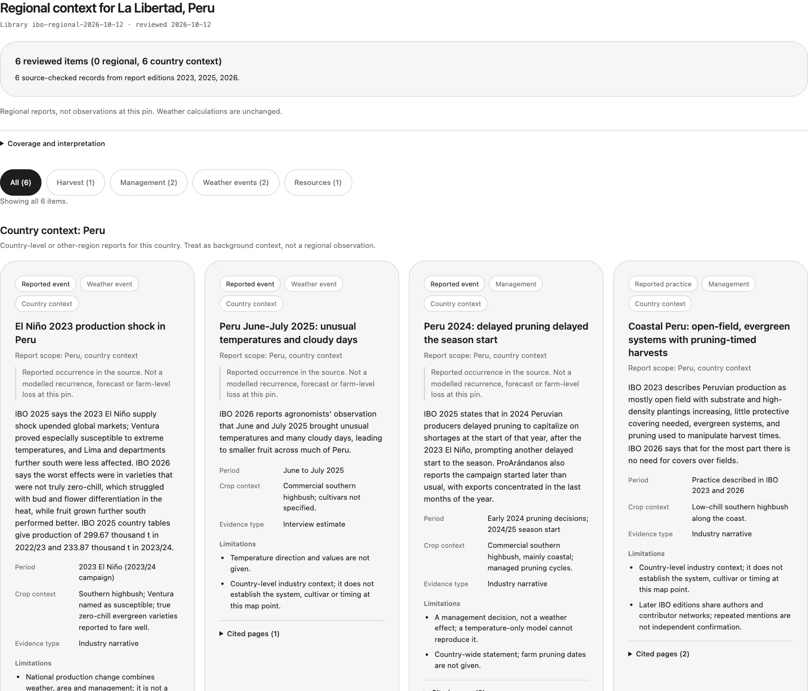
- Reported event, practice or constraint. Something that happened, something growers do, or something that limits production, such as water.
- Country context or regional. Whether the statement is about the whole country or the pin's region.
- Limitations. Why the statement may not apply to your pin.
- Outside weather baseline. A tag for events after 2025, which the weather record does not cover.
Rules that keep it honest
- The reports never change the weather numbers, the calendar or the risks.
- A report about a region is not an observation at your pin.
- No record does not mean nothing happened. It means the library has nothing for that area yet. Papanduva, for example, has no matching record.
- If the map shapes and the library do not match, the tab shows nothing rather than guessing. Matching by place name failed in testing: Washington state and Washington, DC share a name.
Part 15
The other tabs
Climate history
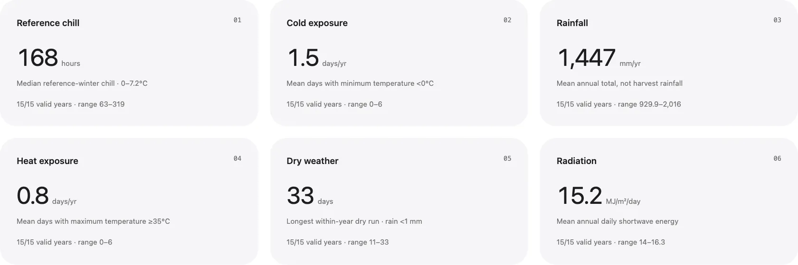
- Reference chill, 168 hours. A second chill count with a different rule: only hours from 0 to 7.2 °C, from May to August in the south and November to February in the north. It will not match the 199 on the Season tab.
- Cold exposure, 1.5 days a year. Days with a minimum below 0 °C, at any time of year.
- Rainfall, 1,447 mm a year. The whole year, not just harvest.
- Heat exposure, 0.8 days a year. Days reaching 35 °C or more.
- Dry weather, 33 days. The longest run of days with less than 1 mm of rain within a year.
- Radiation, 15.2. Average daily sunshine energy, in megajoules per square metre.
Soil & setup
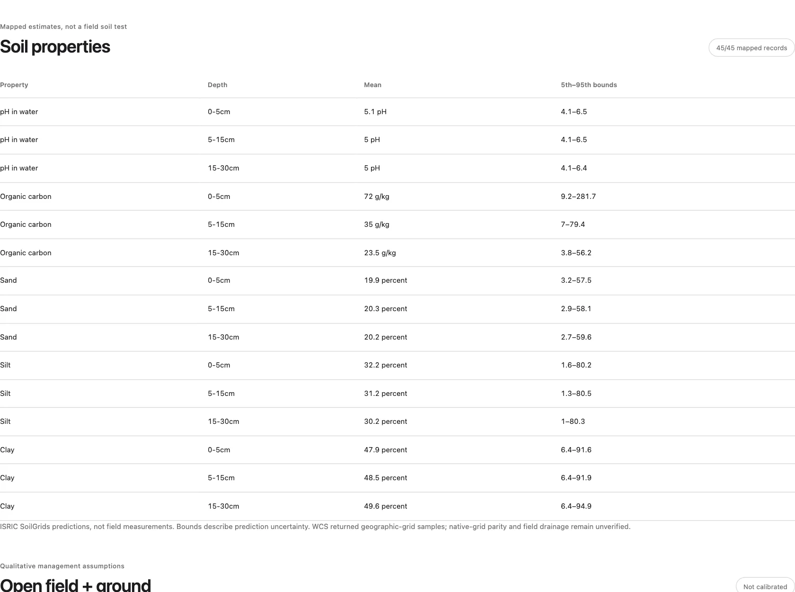
The soil numbers are map estimates, not a soil test. The growing setup choice, open field or tunnel, ground or pots, changes the written notes only. The app has no calculation for tunnels or pots.
Methods & data
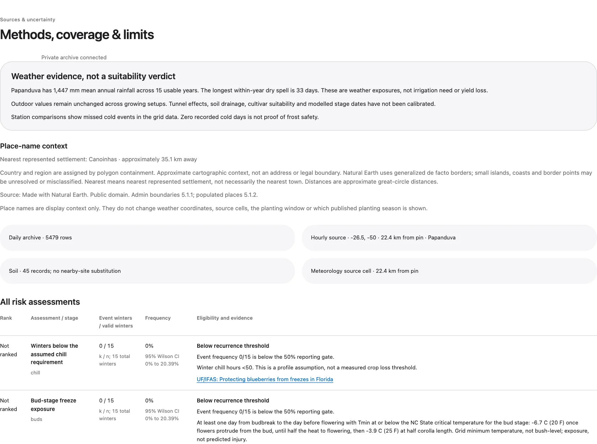
It shows the weather box used and its distance from the pin, how many days of data exist, every risk check with its reason, the sources, and the analysis ID, a code that identifies this exact result. It also links to the benchmark page, which compares the model with published calendars at 53 regions.
Part 16
How much to trust the numbers
What has been checked
The software itself: 251 automatic tests pass on the server. The 53-site benchmark compares the model with published regional calendars. At 26 of the 30 southern-highbush sites where the winter calendar applies, the middle of the model's harvest falls in the published harvest months. Station checks and three historic frosts show where the grid works and where it misses.
What has not been checked
Dated budbreak, bloom and harvest records from real farms and named cultivars. Until those exist, every date is a model estimate. That is why the app says "unvalidated".
Known weak spots
The heat settings come from Florida low-chill southern highbush, so other blueberry types will be off. Frosts in valleys are often missed by the weather boxes. Coastal pins can get a box that is mostly sea. The harvest-end setting is the least certain number.
What the server collects next
Since 12 October the server collects public records on a weekly, monthly or quarterly schedule: US crop-insurance losses by cause and month, US storm reports, hourly weather stations near every location, Chile's orchard census and exports, EU blueberry imports, and Peruvian crop bulletins. They will be used to check the model. The app does not show them yet.
Part 17
Questions people ask
Why does Papanduva show a winter calendar and also a scan?
The winter calendar is the main answer there, because all three tests in Part 9 pass. The scan further down the Season tab is a comparison titled "If managed as an evergreen cycle". It shows what would happen if growers started the crop by pruning instead of waiting for winter.
Why is the chill number different on the Climate history tab?
It is a different ruler. The Season tab counts hours below 7.2 °C from April to September: 199. Climate history counts only hours from 0 to 7.2 °C from May to August: 168. Neither is wrong.
Does 100% mean the crop fails every year?
No. It means the event happened at least once in every year checked. One wet harvest day counts the same as twelve. Look at the averages in the card's definition box to judge how serious it was.
Do the colours show danger?
No. On the Season tab each colour only names a crop stage. In the scan strip, black means favourable and the striped and brick-red boxes mark blocked start dates.
Why do the bars move when I pick another winter?
Each year has its own weather, so its own chill date and heat totals. A warm spring moves flowering and harvest earlier.
Why did the Papanduva dates move earlier in October 2026?
On 12 October 2026 the chill requirement went from 100 to 50 hours, at the user's request. The cold dose now completes earlier, so budbreak and every later stage come earlier. Typical budbreak moved from 2 August to 23 July. The two mildest winters, 2015 and 2023, now reach the requirement, so all 15 winters have a calendar. The app's sensitivity table still reports two comparison profiles that keep 100 hours.
Why does my dropped pin show no published season?
Published seasons only exist for saved locations registered in Florida, Georgia or Santa Catarina. A new pin has no registered region, and the app does not guess one. The pin still gets a calculated planting window from its own modelled budbreak.
Is this a forecast for next season?
No. It summarises the winters of 2011 to 2025. Next season can be earlier or later than anything shown.
What happens where there is no hourly weather?
Some islands and coasts have only daily weather. The app then shows the climate history, but no chill hours, calendar or stage risks, because those need hourly temperature. It never invents hourly values.
Why might a cold place get "No favourable start"?
The heat settings describe a Florida-type plant. In a short, cool summer the model plant cannot collect enough heat, so the runs stall. This is a limit of the settings, not proof that blueberries cannot grow there.
Part 18
Glossary
- Analysis window
- The dates inside which the app checks the weather for one crop stage. Drawn as a solid bar.
- Budbreak
- The day the model plant's buds open, after its cold dose and 150 heat units.
- Chill date
- The day the 50th chill hour arrives in a winter.
- Chill hour
- One hour colder than 7.2 °C inside the winter counting window.
- Chill portion
- A unit of cold from the Dynamic Model, in which warm spells can cancel cold. Shown for comparison only.
- Chill requirement
- The cold dose the model plant needs: 50 chill hours, set on 12 October 2026.
- Cycle, or run
- One crop season from one start date in one year, used by the scan.
- Exposure
- How much of a weather condition a stage received, such as rainfall or frost days. Not a loss.
- Forcing
- The time after the chill date while the plant collects its first 150 heat units. Drawn as a thin bar and not measured.
- Frequency
- The share of checked years in which an event happened at least once.
- Heat unit, degree-day, GDD
- A day's average temperature minus 7 °C, never below 0. After budbreak, temperatures above 30 °C count as 30.
- Horizon
- The longest the model waits for a stage: 300 days. Budbreak may take up to 450 days from the start of winter.
- Median
- The middle value when the years are put in order.
- p10 and p90
- The points with 1 year in 10 earlier, and 1 year in 10 later. Together they make the dotted boxes.
- Planting window
- A one-time season for planting nursery plants, from 105 to 30 days before the typical modelled budbreak. Based on preliminary offsets from the supervisor's R workflow. Not validated.
- Production system
- Deciduous, semi-evergreen or evergreen: the climate label from chill hours and winter mildness.
- Production window
- When the plant typically flowers and is harvested at the place.
- Published season
- A planting season copied from a regional university guide, shown beside the planting window for comparison. Only for saved locations registered in Florida, Georgia or Santa Catarina.
- stage_thermal_v3
- The name of the current crop model: version 3, with stages driven by heat units.
- Unvalidated
- Not yet compared with dated records from real farms.
- UTC
- The world clock that the app uses to count days.
- Valid winter
- A year with complete weather and dates for a given check.
Where the full details live
docs/APP_USER_GUIDE.md: the written user guide with every message and error explained.docs/weather/production/model_formulas_for_breeder_review.html: every formula and setting, with a worked Waldo example and comment boxes.docs/weather/production/README.md: the method notes with sources.docs/weather/benchmark/benchmark.html: the 53-site comparison with published calendars.